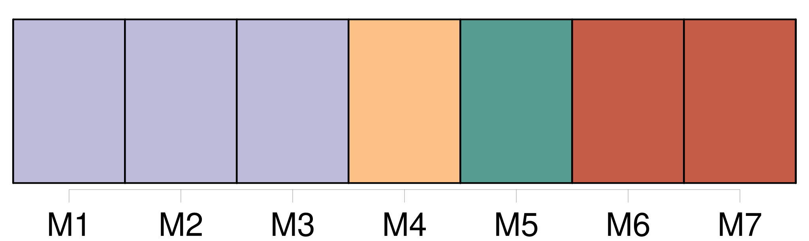
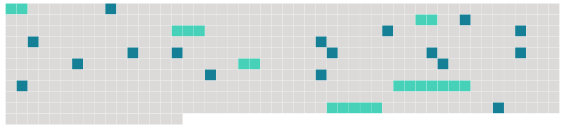

Longueur nb maillons : 24 mentions |
  |
[Thierry Pellard] : « L'héritier des imagiés » [1 phrases] Puis, de dessins en réflexions, un désir a germé en [Thierry Pellard] : « [Je] suis parti de l'idée : et pourquoi pas en trois dimensions?? [1 phrases]
C'est ainsi que depuis neuf ans, [M. Pellard] se lança de façon totalement autodidacte dans la sculpture et n'a de cesse de travailler [son] art et de le faire évoluer, au second étage de [son] propre appartement bisontin : « [Je] cherche un " vrai " atelier, mais les tarifs sont réellement élevés, alors en attendant de trouver quelque chose de plus raisonnable, [je] travaille chez moi ». Durant toute la semaine du Salon d'art contemporain Contempora, qui se tenait à Ornans du 8 au 16 mai, les visiteurs ont pu admirer [ses] œuvres : « [Ma] première exposition publique s'est faite ici -même à Contempora. Le concept [m'] avait paru très ouvert et lorsque Béatrice Suisse [m'] a sollicité pour participer cette année, [j'] ai accepté avec une grande joie », dit [Thierry] , la voix posée et un sourire tranquille aux lèvres.
Ceci dit, [l'artiste] a sur 98 / 99 participé à six expositions dont deux eurent de bonnes répercussions puisqu' [il] se vit remettre le premier prix de sculpture et le premier prix de l'exposition de Pouilley-les-Vignes, dont le président du jury était Paul Gonez. « [Je] porte énormément d'intérêt à l'art Roman. [J'] ai donc pas mal voyagé, surtout en France, un des pays les plus riches d'Europe dans ce domaine.
[Je] lis également beaucoup et notamment des essais sur l'histoire des religions, les mythologies, la psychologie en général » D'aucun n'oserait mettre en doute l'éclectisme des goûts de [ce « sculpteur à temps partiel »] selon ses propres termes et non sans un zeste d'humour. [2 phrases]
Toutes les superbes fresques que l'on peut admirer sont en quelque sorte les « BD » de l'époque », nous explique [M. Pellard] [pour qui] l'art Roman est presque un « sacerdoce ». [Sa] prochaine exposition se tiendra en Sâone-et-Loire sur la thématique Romane et il sera possible de visiter l'abbaye de Tournus. |
 |
La ressource peut être téléchargée sur la page Ortolang
Si vous avez des questions ou vous voyez des erreurs, merci d'envoyer un mail à silvia.federzoni89@gmail.com
Site développé par S. Federzoni (contact)